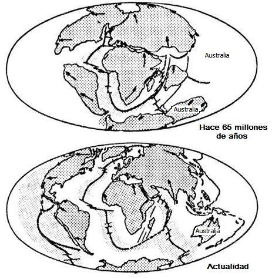
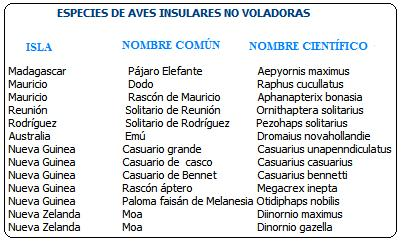
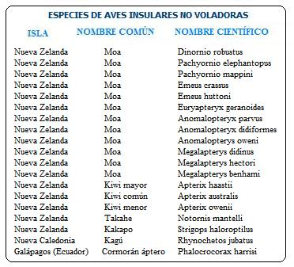

Era una mañana soleada y feliz. Ese día me encontraba en mi clase bíblica para niños y frente a mi una señora con figuritas coloridas de fieltro se disponía a contarnos una historia de la Biblia. Mientras centrábamos nuestra atención en el tablero de fieltro la maestra decía: “En los tiempo de Noé toda la Tierra fue destruida por un diluvio y sólo se salvaron Noé, su familia y una pareja de cada especie animal, aunque de ciertos animales, como las ovejas y las vacas entraron siete animales. El resto pereció como consecuencia del pecado.”

Fíg. 1: “El Arca de Noé”, 1846 por Edward Hicks
El tiempo pasó, y cuando llegué a joven seguía creyendo estas historias. Sin embargo un día tuve las siguientes preguntas: ¿Cómo llegaron los koalas a Australia desde el monte Ararat? ¿Cómo sobrevivieron en su travesía desde Ararat hasta Australia sin hojas de eucaliptos para comer en su camino? Recuerde que los eucaliptos son endémicos de Australia y que los koalas se alimentan casi exclusivamente de estas plantas.

Fíg. 2: Koala (Phascolarctos cinereus)
La pregunta tenía lógica ya que desde el literalismo bíblico se afirma que después del diluvio no quedaron más animales que los se habían salvado en el arca. Estos desembarcaron en el monte Ararat (en la actual república ex-soviética de Armenia) y desde allí repoblaron el Mundo.
¿Cómo es que criaturas frágiles como el ornitorrinco y el ciego topo marsupial cruzaron por el puente de tierra a Australia más rápido que los tigres de Malasia y otros placentarios robustos?
—Robert A. Moore, El Viaje Imposible del Arca de Noé
He aquí algunas respuestas curiosas que he encontrado sobre este interrogante:
“Supongo que había una gran señal en alguna parte en el Sur oriente de Java, con una inscripción que decía: Zona de la Cuarentena celestial: Ningún Mamífero placentario, con la excepción de roedores y los precursores genéticos del Canis familiaris dingo (el dingo) pueden transportarse o deambular más allá de este punto. Las especies marsupiales americanas deben tomar la ruta del Estrecho de Bering. Mapas disponible en la oficina de estación de cuarentena.” (Horas de Oficina 9:00 A.M.- 5:00 P.M.)
—Peter Lamb, Talk. Origins Newsgroup. 30 de abril de 1996
“El monstruo mexicano del Gila y el lagarto barbado (los únicos miembros de la familia Helodermatidae), desembarcaron del arca, pero escogieron no quedarse en los inconvenientes desiertos asiáticos. En cambio, viajaron a través de Siberia para llegar al Sudoeste americano por el puente tierra de Bering, por Alaska, y Canadá, para llegar al suroeste americano. ¡Lograron este hecho durante la misma Edad de Hielo que, según los creacionistas, diezmó a los dinosaurios y enterraron a los mamuts!”
—Robert A. Moore, El Viaje Imposible del Arca de Noé.
“Los osos perezosos son tan lentos que el musgo crece en su pelaje. Cuando ellos mueven, que no es lo frecuente, les toma tres horas y media pasear una milla. Su metabolismo es tan bajo que holgazanean en los árboles y absorben los rayos del sol durante la parte mayor del día. Me pregunto cómo llegaron a las selvas de América del Sur los dos perezosos, cuando desembarcaron del arca de Noé. ¿Caminaron por Asia, a través del desierto frío de Siberia del norte, cruzaron Alaska, y luego caminaron hasta América del Sur para ponerse calurosos de nuevo? Todo un record roto por los perezosos. ¿Qué comieron en su travesía? ¡Qué buen libro de aventuras sería, con los efectos postcataclísmicos del Diluvio acechando cada uno de sus pasos. ¡Ojalá que esa historia estuviera en la Biblia!”
—Skip Chuch
Los biólogos se explican la distribución actual de las plantas y animales teniendo en cuenta la evolución de los organismos y la deriva continental. Las dos opciones están descartadas dentro de la denominación en la que fui criado, ya que éstas implican largos períodos de tiempo.
Sin embargo, los koalas son solo una especie de marsupiales, y Australia está llena de marsupiales nativos: Uombats, canguros, bandicuts, etc. Por esta razón la pregunta luego se extendió a todos los marsupiales endémicos de Australia: “¿Cómo llegaron los marsupiales a Australia desde el monte Ararat?”

Fíg. 3: Marsupiales australianos
En 1988 Frank Zindler publicó sus dudas similares en la revista American Atheist:
“La población de marsupiales de Australia contiene animales que no se encuentran en ninguna otra parte en la Tierra - ni siquiera en forma fósil. ¿Cómo suponemos que esos marsupiales viajaron desde el lugar del desembarco del arca de Noé hasta Australia? Que viaje postdiluvial tan largo y peligroso. Supongo que dios los guió. Pero uno no oye hablar de ese milagro en la Biblia. ¿Por qué no? Por lo menos es tan buena como la historia de Dios pastoreando a los Israelitas a través del desierto, sólo que estos marsupiales fueron pastoreados a través de una tierra postdiluvial desnuda, y sufriendo cantidades de cataclismos. Este zoológico de uombats, osos marsupiales, bandicuts y canguros (por no mencionar las aves no voladoras como los moa y el kiwi de Nueva Zelanda) tenían que mantenerse a la delantera de los leones, los tigres y los osos durante todo el camino hasta Indonesia, y entonces, aunque los mamíferos placentarios superiores no pudieron lograrlo - alcanzaron el continente de Australia. ¡Como si esto no fuera lo suficientemente asombroso, resulta que los tipos de marsupiales que llegaron a Australia era justo el conjunto capaz de llenar todos los nichos ecológicos disponibles! Había topos marsupiales, comedores de hormigas, ratones, ramoneadotes, carnívoros, frugívoros, etc. - ninguno de los cuales puede encontrarse en otra parte del mundo. Si este grupo favorablemente diversificado de marsupiales evolucionó de uno o unos pocos marsupiales primitivos generalizados que alcanzaron hace millones de años Australia, antes de que separara de Indonesia (y antes de que los mamíferos hubiesen evolucionado), entonces esta situación peculiar es entendible. Pero si todas estas criaturas tuvieron que viajar de Turquía hasta Australia como un conjunto, es increíble más allá del cálculo. (Nota: la biología Molecular y la anatomía demuestran que entre las especies vivientes de marsupiales, los koalas están estrechamente relacionados a los uombats, y sólo se encuentran los restos fosilizados de osos marsupiales y uombats en Australia.)
La distribución geográfica de las aves también plantea interrogantes similares. En muchas islas oceánicas se pueden encontrar aves no voladoras o que tienen poca habilidad para volar, razón por la que parece poco probable que hayan llegado allí desde el Monte Ararat (Véase listado al final).
En realidad son muchas las especies de aves insulares endémicas que son incapaces de volar. Tomemos por ejemplo el famoso dodo y hágamos las siguientes preguntas: ¿Cómo pudo llegar un ave pesada y no voladora a una isla oceánica? ¿Por qué llego sólo allí? ¿Cómo sobrevivió por fuera de su hábitat natural en su travesía desde el monte Ararat hasta la isla donde reside actualmente sin los recursos de los que depende su alimentación? ¿Cómo sobrevivió durante su viaje a enemigos naturales de los que no podía defenderse? ¿Cómo sobrevivieron en el arca durante el supuesto diluvio?

Fíg 4: El dodo (Raphus cucullatus), el ave extinta más famosa.
Ahora realicemos estas mismas preguntas con las otras 31 especies restantes de la lista (al final del texto). Sería imposible que estas aves hubiesen llegado a las islas donde actualmente viven desde la costa del lado continental, tal como lo supone la leyenda del diluvio universal.
Hasta el momento no he hecho más que decir que es poco probable que las aves no voladoras hallan llegado desde el monte Ararat, después del diluvio, a sus respectivas islas. Pero no he respondido por qué se encuentran estas especies únicas en estas islas. La respuesta es simple: Por que han evolucionado allí.
Cuando un grupo de individuos de una especie A, llega a un lugar nuevo (por ejemplo una isla oceánica) y encuentran allí nuevas condiciones ambientales, es entonces cuando la selección natural (la supervivencia y reproducción diferencial de unos individuos respecto a otros) empieza a actuar, llevando con el tiempo a formar una especie nueva: A’. Es por esto que la clase de las aves presenta tantas dificultades insalvables al relato del diluvio. Dada la capacidad de volar, estas colonizan más fácilmente las islas que los demás grupos de animales. Una vez aisladas geográficamente de las poblaciones originales, la selección natural actúa adaptando a los organismos a un nuevo ambiente, llevando a una diferenciación respecto a las poblaciones originales.

Fíg. 5:Dos aves no voladoras. A la izquierda el gigantesco pájaro elefante de Madagascar (Aepyornis maximus), a la derecha el cormorán áptero o cormorán moñudo de las islas Galápagos (Phalacrocorax harrisi).
¿Y por qué la evolución produjo aves incapaces de volar? La razón es que en estos nuevos lugares, muchas aves ocuparon papeles ecológicos de frugívoros o ramoneadores terrestres a lo cual se suma, con frecuencia, la ausencia de depredadores. Por esta razón se hace innecesaria la capacidad de volar. En otras palabras: La existencia de nuevas oportunidades ecológicas libres de competencia supone la oportunidad de evolución para una especie nueva. El paleontólogo Stephen Jay Gould con respecto a la formación de nuevas especies afirmó:
“En teoría darwiniana la competencia es el gran regulador. Darwin concibió metafóricamente el mundo como un tronco con diez mil cuñas, que representan las especies, apretadamente clavadas a lo largo de su longitud. Una nueva especie únicamente puede entrar en este mundo atestado insinuándose en alguna rendija y haciendo saltar otra cuña. [1]
Bajo esta perspectiva podemos respondernos cómo apareció una especie no voladora, como el dodo en la isla Mauricio. Esta ave muy probablemente descienda de alguna población de palomas que si podían volar, que llegaron a la isla Mauricio y posteriormente se adaptaron al nuevo ambiente, haciéndose al final muy diferentes de la especie de paloma parental. Al estudiar la anatomía del dodo se puede advertir que su esternón tenía una minúscula quilla; esto indicaba que sus antepasados en tiempo geológico si podían volar.
Otro aspecto que debemos tener en cuenta para entender la distribución geográfica de plantas y animales es la deriva continental. Australia, por ejemplo se separó de la Antártica hace aproximadamente 40 millones de años.
Durante millones de años las placas tectónicas se han estado moviendo lenta pero continuamente contribuyendo así a separar faunas y floras enteras durante largos períodos de tiempo. La deriva continental también a jugado un papel muy importante en la evolución del clima de la Tierra al modificar el paso de las corrientes marinas y al crear nuevas cadenas montañosas (al chocar dos placas) que modifican los patrones de lluvias a uno y otro lado de la montaña (efecto de sombra de lluvia).
Las pruebas de la deriva continental son demasiadas y encajan con la idea que las especies cambian con el tiempo y que todas provienen de un ancestro común.
Cuando se le presentan estas objeciones a un creacionista su estrategia es dejar de prestar atención a las evidencias, y de esta manera asume que desaparecen. La duda les es poco placentera comparada con la confortable idea de ser los poseedores de toda la verdad.
Apéndice
Lo invitamos a leer el artículo relacionado: “Cómo Conversar Sobre el Diluvio Universal con los Testigos de Jehová (y otros creyentes)”
Volver a la sección Ciencias de los orígenes
Comentarios
Comments powered by Disqus